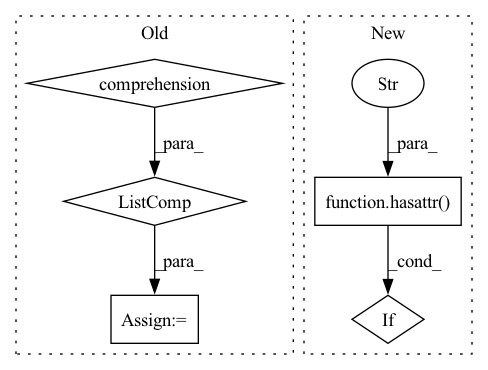

Pattern ID :37146
Before Change
self.init_weights()
def export_labels(self, bufs, device):
max_len = max([buf.calc_size() for buf in bufs] )
start, end = torch.zeros(2, len(bufs), max_len, dtype=torch.long, device=device)
for i, buf in enumerate(bufs):
t = 0After Change
labels[0, i] = t + b.start[0]
if hasattr(b, "end"):
labels[1, i] = t + b.end[0]
if hasattr(b, "start") or hasattr( b, "end" ) :
crucial.append(b)
t += len(b)
crucials.append(crucial)In pattern: SUPERPATTERN
Frequency: 3
Non-data size: 5
Instances Fragment ID: 107108962
Project Name: sleepychord/cogltx
Commit Name: fa95d7ee6ce795f575e14dcde6ec26c9437107c0
Time: 2020-03-05
Author: dm_thu@qq.com
File Name: models.py
M Class Name: QAReasoner
N Class Name: QAReasoner
M Method Name: export_labels(3)
N Method Name: export_labels(3)
M Parent Class: Reasoner,BertPreTrainedModel
N Parent Class: Reasoner,BertPreTrainedModel
M File Name: models.py
N File Name: models.py
M Start Line: 83
M End Line: 94
N Start Line: 85
N End Line: 98
Before Change
self.num_branches = len(patch_size)
self.patch_embed = nn.ModuleList()
self.pos_embed = nn.ParameterList([nn.Parameter(torch.zeros(1, 1 + num_patches[i], embed_dim[i])) for i in range(self.num_branches)] )
for im_s, p, d in zip(img_size, patch_size, embed_dim):
self.patch_embed.append(PatchEmbed(img_size=im_s, patch_size=p, in_chans=in_chans, embed_dim=d, multi_conv=multi_conv))
After Change
self.head = nn.ModuleList([nn.Linear(embed_dim[i], num_classes) if num_classes > 0 else nn.Identity() for i in range(self.num_branches)])
for i in range(self.num_branches):
if hasattr( self, f"pos_embed_{i}" ) :
// if self.pos_embed[i].requires_grad:
trunc_normal_(getattr(self, f"pos_embed_{i}"), std=.02)
trunc_normal_(getattr(self, f"cls_token_{i}"), std=.02) Fragment ID: 107108960
Project Name: feng-lab/pytorch-image-models
Commit Name: bb50b69a57229a3ee30bbd460539c9a45e508532
Time: 2021-09-08
Author: chenrich@us.ibm.com
File Name: timm/models/crossvit.py
M Class Name: CrossViT
N Class Name: CrossViT
M Method Name: __init__(16)
N Method Name: __init__(16)
M Parent Class: nn.Module
N Parent Class: nn.Module
M File Name: timm/models/crossvit.py
N File Name: timm/models/crossvit.py
M Start Line: 246
M End Line: 277
N Start Line: 245
N End Line: 281
Before Change
output_trt = slice_layer.get_output(0)
// Step 3.5 - Add gather layer if necessary
gather_index = [e for e, s in enumerate(slices) if isinstance(s, torch.Tensor) and (s.dtype==torch.int32 or s.dtype==torch.long)]
for gidx in gather_index:
index_tensor = slices[gidx]
index_tensor_trt = trt_(ctx.network, index_tensor)
output_trt = ctx.network.add_gather(output_trt, index_tensor_trt, gidx).get_output(0)After Change
continue
if isinstance(gather_value, torch.Tensor):
index_tensor = gather_value
if not hasattr( index_tensor, "_trt" ) :
index_tensor = index_tensor.int()
else:
index_tensor = input.new_tensor(gather_value).int() Fragment ID: 107108957
Project Name: grimoire/torch2trt_dynamic
Commit Name: aa3a7dcd4cac8b43d220a57e5d9a3d52064f9049
Time: 2020-07-24
Author: streetyao@live.com
File Name: torch2trt/converters/getitem.py
M Class Name: AnonimousClass
N Class Name: AnonimousClass
M Method Name: convert_tensor_getitem(1)
N Method Name: convert_tensor_getitem(1)
M Parent Class:
N Parent Class:
M File Name: torch2trt/converters/getitem.py
N File Name: torch2trt/converters/getitem.py
M Start Line: 29
M End Line: 149
N Start Line: 29
N End Line: 166